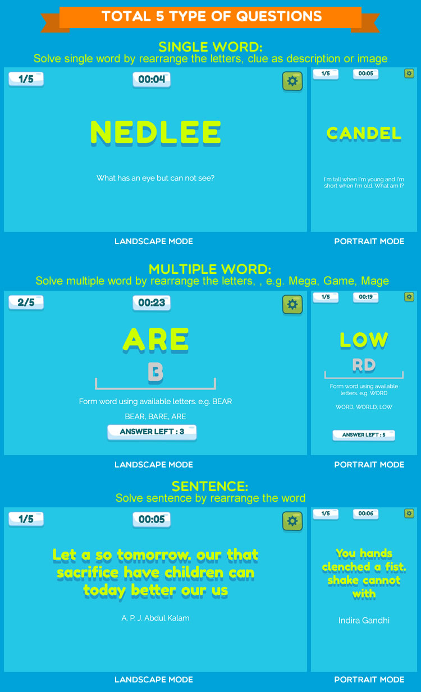
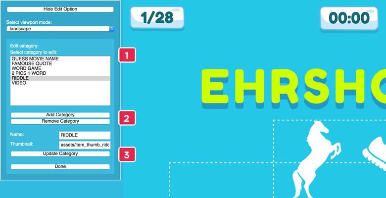
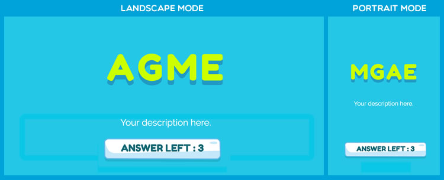

“Rearrange Letters 2” Documentation by “demonisblack” v2.7
“Rearrange Letters 2”
Created: 18/4/2019
By: demonisblack
Email: demonisblack@gmail.com
Thank you for purchasing the game. If you have any questions that are beyond the scope of this help file, please feel free to email via profile page contact form here. Thanks so much!
Table of Contents
- Introduction
- Getting Started
- HTML Structure
- CSS Files and Structure
- JavaScript
- Game Functions
- Game Assets
- XML File
- Build-in Edit Tools
- Question Templates
- Save XML with password
- Scoreboard
- Compatibility
- Sources and Credits
- Changelog
- Support Policy
A) Introduction - top
Rearrange Letters 2 is a HTML5 game where you can arrange the letters and make the right word by given description as a clue, it is rebuild without canvas which can support responsive for landscape and portrait layout, and include the new drag and drop sentence question.
The ZIP package contains the game with 1200×650 resolution that scales to fit the whole screen device, but it may not be perfectly full screen.
B) Getting Started - top
To install the game just upload folder 'game' to your server. The game won't run locally with some browser like Chrome due to some security mode.
You need a website that runs PHP to make facebook share button work, and make sure to change Facebook Open Graph meta and Twitter meta in index.html, just replace [GAME_URL] to your game URL.
<!-- for Facebook -->
<meta property="og:image" content="[GAME_URL]/share.jpg" />
<meta property="og:url" content="[GAME_URL]" />
<!-- for Twitter -->
<meta name="twitter:image" content="[GAME_URL]/share.jpg" />
You can easily customize game text and settings in game.js file
var screenSettings = {
stageW:1200, //game width
stageH:650, //game height
portraitW:380, //game portrait width
portraitH:600, //game portrait height
fitToScreen:true, //fit to browser screen
maintainAspectRatio:true, //maintain aspect ratio
viewportMode:{enable:false, viewport:"portrait", text:"Rotate your device
to portrait"}, //device viewport mode, portrait or landscape
}
//title settings
var titleSettings = {
text:["REARRANGE","LETTERS|2"], //array for new lines, use | for spacing
fontSize:120,
lineHeight:120,
shadow:15,
color:"#ccff00",
spaceX:10,
spaceY:10,
x:50,
y:40,
tween:0.3,
portrait:{
fontSize:40,
lineHeight:40,
spaceX:5,
spaceY:5,
x:50,
y:35,
tween:0.3
}
}
//category settings
var categorySettings = {
status:true, //show/hide category select page
allOption:true, //add ALL category select option
allText:"ALL", //text for all category select option
sort:true, //sort category alphatically, except All option always at last
breadcrumb:" > ",//symbol for breadcrumb
breadcrumbTop:"BACK" //breadcrumb top level name
};
//question settings
var questionSettings = {
totalQuestionLimit:0, //set more than 0 to limit total questions,
randomQuestion:true, //true or false to enable randomize questions
loader:"LOADING QUESTION...", //loader text display
totalText:"[NUMBER]/[TOTAL]", //total question text display
correctText:"FOUND NEW WORD!", //correct answer text display
scoreText:"YOU SCORE 1PTS!", //score text display
answerLeftText:"ANSWER LEFT : [NUMBER]" //answer left text display
};
//timer settings
var timerSettings = {
status:true, //true or false to enable timer
mode:"default", //default or countdown mode
session:"all", //single for one questions, all for whole session
timer:25000, //total timer for countdown mode
timesupText:"TIME'S UP", //time"s up text display
};
//reveal answer settings
var revealAnswerSettings = {
status:true, //true or false to enable reveal answer
timer:10000, //10 second timer to show reveal button
tween:1 //reveal answer animation tween speed
}
//drag settings
var dragSettings = {
shadow:15, //letters normal shadow
shadowHover:20, //letters dragging shadow
hoverScale:1.3, //letters dragging scale
hoverTween:1, //letters scale animation tween speed
answerAnimateTween:0.4, //answer aniamtion tween speed
answerAnimateScale:1.3 //answer aniamtion scale
}
//single letter settings
var wordProperty = {
fontSize:120,
lineHeight:120,
color:"#ccff00",
x:50,
y:40,
spaceX:10,
spaceY:10,
width:80
};
//single letter unused settings (multiple word with different length)
var wordBottomProperty = {
fontSize:100,
lineHeight:100,
color:"#ccc",
x:50,
y:52,
spaceX:10,
spaceY:10,
width:80
};
//sentence settings
var sentenceProperty = {
fontSize:60,
lineHeight:60,
color:"#ccff00",
x:50,
y:40,
spaceX:20,
spaceY:10,
width:70,
};
//description settings
var descriptionProperty = {
fontSize:30,
lineHeight:30,
color:"#fff",
align:"center",
top:65,
left:10,
width:80,
height:20,
};
//background settings
var backgroundProperty = {
top:0,
left:0,
width:100,
height:100,
};
//video settings
var videoProperty = {
top:15,
left:30,
width:40,
height:41,
autoplay:true,
controls:true
};
//audio settings
var audioSettings = {
description:500, //.5 second delay to play description
answer:1000, //1 second delay to play description
};
//result settings
var resultSettings = {
mode:"score", //display result by "score" or "timer"
reverse:false, //display result in reverse
scoreText: "YOUR SCORE : [NUMBER]", //score text display
timerText: "BEST TIME : [NUMBER]" //timer text display
};
//Social share, [SCORE] will replace with game score
var shareSettings = {
shareEnable:true, //toggle share
shareTitle:"Highscore on Rearrange Letters 2 Game is [SCORE]", //social share score title
shareMessage:"[SCORE] is mine new highscore on Rearrange Letters 2 Game! Try it now!", //social share score message
}
If you wish to customize the question, description and background image via XML file, check out XML File section.
If you wish to customize the question, description and background image with build-in tool, check out Build-In Editor Tool section.
If you wish to check out question templates, check out Question Templates section.
If you wish to enable scorebard, check out Scorebard section.
The sound can be easily disabled to avoid compatibility issues in sound.js file:
var enableMobileSound = true;
C) HTML Structure - top
The page start with the loader wrapper that covering the whole screen in the body. It shows loader progress when calls the function initPreload()
<!-- PERCENT LOADER START-->
<div id="mainLoader"><span>0</span></div>
<!-- PERCENT LOADER END-->
Follow by one HTML tag in the body. The game start initiatie by calls the main function of the game initMain().
<!-- CONTENT START-->
<div id="mainHolder">
</div>
<!-- CONTENT END-->
D) CSS Files and Structure - top
I'm using two CSS files in this game. The first one is a generic reset file. Many browser interpret the default behavior of html elements differently. By using a general reset CSS file, we can work round this. This file also contains some general styling, such as anchor tag colors, font-sizes, etc. Keep in mind, that these values might be overridden somewhere else in the file.
The second file contains all of the specific stylings for the page.
E) JavaScript - top
This game using Javascript files below.
-
jQuery is a cross-platform JavaScript library designed to simplify the client-side scripting of HTML.
-
Detect Mobile Browser is a open source scripts to detect mobile browsers and phones.
-
CreateJs plugin is a suite of modular libraries and tools which work together to create interactive content on open web technologies via HTML5.
-
TweenMax is an extremely fast, lightweight, and flexible animation tool that serves as the foundation of the GreenSock Animation Platform (GSAP).
-
The game have the following js files
- init.js : check if browser or device support
- loader.js : loader to load all game images
- main.js : initiate game setup and browser resize function
- game.js : game play and logics
- score.js : scoreboard and server
- sound.js : sound event
- plugins.js : additonal useful plugins
- init.js : check if browser or device support
Complete game flow:
- The index.html file start init.js for browser detection
- If browser is supported, init loader.js to start load asserts with loading progress
- When all asserts contained in "/assets" folder are loaded, the game start construct from main.js thats shows game menu
- If user click the screen in game menu, the game will start category page with game.js
- If user click select category in category page, the game will start with first question
- If user solve the right word, user will score point and move to next question
- If user cannot solve the word on time, game result will shows
- When all the question is complete, game result will shows
- If user click the screen in game result, it will restart the game
F) Game Functions - top
The most important functions used for page.
-
checkBrowser()
This function is runs for browser detection
-
checkMobileEvent()
This function runs for mobile event
The most important functions used for game.
-
initMain()
This function build canvas
-
startGame()
This function start gameplay
-
stopGame()
This function stop gameplay
-
saveGame()
This function save game score
G) Game Assets - top
The game contain 'design' folder which include following:
- rearrangeletters2_1200x650.psd - with layer folders below
- Option
- Result
- Game
- Category
- Landing
- Background
The folder 'assets' in 'game' folder contains all the images of the game that can be replaced. Is better to have the same size of the old ones if you want to reskin the game graphic without coding.
H) XML File - top
You can easily build or edit Question, Description and Background Image in questions.xml file
All Question, Description and Background Image are store in each XML item, sample code below:.
<item>
<category>2 PICS 1 WORD</category>
<landscape>
<question type="0" x="50" y="35" audio="assets/sounds/questions/horseshoe.ogg">HORSESHOE</question>
<description/>
<background width="35" left="32.5" top="48">assets/questions/horseshoe.svg</background>
</landscape>
<portrait>
<question type="0" fontSize="50" spaceX="5" spaceY="10" audio="assets/sounds/questions/horseshoe.ogg">HORSESHOE</question>
<description/>
<background width="80" top="50" left="10">assets/questions/horseshoe.svg</background>
</portrait>
</item>
Below is the explanation of each most important XML elements:
- category - is to categories the type of question (eg. RIDDLE, WORD GAME), the category name will be display in category page, leave it empty if categoryPage option is set to false.
<category>RIDDLE</category> - landscape, portrait - all questions value are seperate by two view mode which is landscape and portrait, each mode have their own values and settings
<landscape></landscape> <portrait></portrait> - question - the question and description must enter in between <![CDATA[ ]]> in xml so the data contained therein will not be parsed as XMLs
- type - attribute type is type of question, 0 for single word game; 1 for multiple word (same length) game; 2 for multiple word (different length) game; 3 for sentence game
- audio - attribute audio is the audio file path for word, it must have MP3 and OGG file format for cross-browser compatible, only OGG format to be insert to XML data, it will auto change to MP3 if is not support. For multiple word audio you can seperate by comma
- lineHeight - attribute lineHeight can set the text line height (number only), this is optional when the question is too long to adjust the font size smaller, leave it empty to load default font size
- fontSize - attribute fontSize can set the text font size (number only), this is optional when the question is too long to adjust the font size smaller, leave it empty to load default font size
- color - attribute color can change the text color (hex only)
- x - attribute x can change the word x center position (number only) in %
- y - attribute y can change the word y center position (number only) in %
- spaceX - attribute spaceX can change the letter x space (number only) in %
- spaceY - attribute spaceY can change the letter y space (number only) in %
- width - attribute width can change the word width (number only) in %
- bottomLineHeight - attribute bottomLineHeight can set the text line height (number only), this is optional when the question is too long to adjust the font size smaller, leave it empty to load default font size
- bottomFontSize - attribute ontSize can set the text font size (number only), this is optional when the question is too long to adjust the font size smaller, leave it empty to load default font size
- bottomColor - attribute bottomColor can change the text color (hex only)
- bottomX - attribute bottomX can change the word x center position (number only) in %
- bottomY - attribute bottomY can change the word y center position (number only) in %
- bottomSpaceX - attribute bottomSpaceX can change the letter x space (number only) in %
- bottomSpaceY - attribute bottomSpaceY can change the letter y space (number only) in %
- bottomWidth - attribute bottomWidth can change the word width (number only) in %
- description - the description can be insert here in between <![CDATA[ ]]> in xml so the data contained therein will not be parsed as XMLs
- type - attribute type can set to 'image' to load image as description instead of text, and the image path can insert into element like below
<description type='image'>assets/item_unuse.svg</description> - fontSize - attribute fontSize can set the desc font size (number only), this is optional when the question is too long to adjust the font size smaller, leave it empty to load default font size
- lineHeight - attribute lineHeight can set the desc line height (number only), this is optional when the question is too long to adjust the font size smaller, leave it empty to load default font size
- color - attribute color can change the desc color (hex only)
- align - attribute align can set the desc align (left, center, right)
- top - attribute top can change the desc top position (number only) in %
- left - attribute left can change the desc left position (number only) in %
- width - attribute width can change the desc width (number only) in %
- height - attribute height can change the desc height (number only) in %
- audio - attribute audio is the audio file path for desc, it must have MP3 and OGG file format for cross-browser compatible, only OGG format to be insert to XML data, it will auto change to MP3 if is not support.
- background - the background image path can be insert here
- top - attribute top can change the background top position (number only) in %
- left - attribute left can change the background left position (number only) in %
- width - attribute width can change the background width (number only) in %
- height - attribute height can change the background height (number only) in %
- videos - the videos can be insert here
- embed - html video tag or youtube embed (html, youtube)
- top - attribute top can change the video top position (number only) in %
- left - attribute left can change the video left position (number only) in %
- width - attribute width can change the video width (number only) in %
- height - attribute height can change the video height (number only) in %
- autoplay - attribute autoplay is to autoplay the video.
- controls - attribute controls is to show/hide the video player controls.
- video - the video path can be insert here, most browser can support mp4 video format.
- type - video format type (video/mp4, video/webm, video/ogg)
- src - video source file
* For youtube embed must enter in between in xml so the data contained therein will not be parsed as XMLs
#IMPORTANS:
- Each word or sentenece must have at least 2 letters/sentence to work
- Make sure to select the right type for each question, e.g. Single Word or Sentence
You can add category thumbnail with format below.
<category>
<thumb name="RIDDLE">assets/item_thumb_riddle.svg</thumb>
<thumb name="GUESS MOVIE NAME">assets/item_thumb_movie.svg</thumb>
<thumb name="SUBCATEGORY">assets/item_thumb.png</thumb>
<thumb name="SUBCATEGORY 2" parent="SUBCATEGORY">assets/item_thumb.png</thumb>
<thumb name="All">assets/item_thumb.svg</thumb>
</category>
- name - the category name to match for question's category to grap thumbnail, must be unique name and case sensitive
- parent - parent category name
- Follow by the image path
I) Build-in Edit Tools - top
This is the section where you can preview or edit the question with the tool by running edit.html.
1) Basic Options
- Select the viewport mode you want to edit.
- Select the questions you want to edit.
- Additionally you can remove, sort or add new questions.
- Edit your question (Category, Question, Description and Background Image).
- Generate the new XML, copy and replace into questions.xml file
2) Sort question list
3) Add new questions

You may check out Question Templates section.
4) Edit category
- Select caegory you want to edit.
- Additionally you can remove, add new category.
- Update the cateogry name and thumbnail, click Update to save.
5) Edit questions
- Edit category.
- Select type and insert word/sentence.
- Insert word/sentence property to adjust.
- Insert multiple word property to adjust (For multiple word different length option which is unused letters).
- Preview questions to save.
6) Edit description
- Select description type and insert description text or image path.
- Insert description property to adjust, for audio file path it must have MP3 and OGG file format for cross-browser compatible, only OGG format to be insert to XML data, it will auto change to MP3 if is not support
- Preview description to save.
7) Edit background
- Insert background image path and property to adjust.
- Preview description to save.
8) Edit video
- Insert video type for cross-platform support.
- Edit video layout proprety to adjust.
- Preview video to save.
J) Question Templates - top
There are total 5 type of templates:
1. Single Word: Solve single word by rearrange the letters, clue as description
2. Single Word with Picture: Solve single word by rearrange the letters, clue as image
3. Multiple Word (Same Length): Solve multiple word by rearrange the letters, e.g. Mega, Game, Mage

4. Multiple Word (Different Length): Solve multiple word by rearrange the letters, e.g. Finish, Fins, If
5. Sentence: Solve sentence by rearrange the word
K) Save XML with password - top
Build-In Editor Tool come with the 'Save XML' button, follow steps below to use the feature:
- First open save.php and change to the new password, default password is 12345.
It is important to change the new password else anyone can open edit and save your XML file.$savePassord = '12345'; - In the same save.php file, enable the save feature by changing $saveEnable to true.
$saveEnable = true; - Set the questions.xml file permissions to 775 using your FTP software.
- Start the Build-In Editor Tool, clicking the 'Save XML' button will prompt to enter password to save.
L) Scoreboard - top
Scoreboard is a option where user can submit score and view top 10 leaderboard, follow the steps below to setup and run scoreboard.
1) Server setup
Create new database in cPanel
- In cPanel, select MySQL Database Wizard from the Databases section.
- Enter a name for the new database you wish to create and continue to the next step.
- Enter a username and password to create the database user account and continue to the next step.
- Select All Privileges to set security permissions the user has to the database and continue to the next step.
Add new table in cPanel
- In cPanel, select PhpMyAdmin tool from the Databases section.
- Click and open the newly create database and run sql query below to create new table
CREATE TABLE rearrangeletters2_scores (
id INT(6) UNSIGNED AUTO_INCREMENT PRIMARY KEY,
name VARCHAR(30) NOT NULL DEFAULT 'anonymous',
email VARCHAR(30) NOT NULL,
type VARCHAR(30) NOT NULL,
score INT(100) UNSIGNED NOT NULL DEFAULT 0,
date TIMESTAMP DEFAULT CURRENT_TIMESTAMP
) CHARSET=utf8 DEFAULT COLLATE utf8_unicode_ci;
Configuration for database access
- Open dbconn.php in game folder and change the settings to your newly created database info
$host = "localhost"; // MySQL hostname
$dbUserName = "root"; // MySQL database username
$dbPwd = ""; // MySQL database password
$dbName = "scoreboard"; // The name of the database
$table = "rearrangeletters2_scores"; //the name of the table
2) Settings
Enable the scoreboard by changing 'displayScoreBoard' to true in score.js, you can easily customize other settings in here
var scoreboardSettings = {
displayScoreBoard:false, //toggle submit and scoreboard button
scoreBoardTitle:"TOP 10 Scoreboard", //text for scoreboard title
scoreRank_arr:["1st","2nd","3rd","4th","5th","6th","7th","8th","9th","10th"], //scoreboard ranking list
totalScorePage:1, //total score pages, .e.g. 2 for 20 listing
submitTitle:"Submit your score", //text for submit title
score_arr:[{col:"RANK", percent:8, align:"center"},
{col:"NAME", percent:42, align:"left"},
{col:"CATEGORY", percent:20, align:"center"},
{col:"SCORE", percent:30, align:"center"}]
}
M) Compatibility - top
This game is build for Desktop browsers that support HTML5 canvas. Any mobile/tablet should work in landscape view, but they are not officially supported.
N) Sources and Credits - top
I've used the following font and sound files as listed.
- Correct.wav from file bwg2020
- Correct.mp3 from file LittleRainySeasons
- Positive Warning.wav from file Ultranova105
- Success 02 from file rhodesmas
- Button hover.wav from file Fachii
- Menu screen mouse over from file DrMinky
- Menu Select Sound.wav from file Soundscapes55
- Complete Chime from file FoolBoyMedia
- Button Spacey Confirm from file GameAudio
- Answer and Description audio are record from Google Translate
O) Changelog - top
Version 2.7- Fixed multiple words issue
- Added scoreboard format
- Added scoreboard loader
- Oraganized scoreboard folder
- Changed scoreboard settings
- Fixed viewport rotate issue
- Fixed category thumbnail
- Fixed game timer
- View scoreboard from options
- View scoreboard for all category
- Compatible with Quiz Membership System add-on
- Fixed Build-in Editor Tool drag and resize issue
- Option to add subcategory
- Fixed game title shadow issue
- Build-in Editor Tool UI improvements (Able to drag and resize)
- Fixed category after removed
- Option to set device viewport mode
- Fixed video issue
- Added youtube video
- Fixed Build-in Editor issues
- Added shadow option for each questions
- Build-in Editor Tool UI improvements
- Fixed category listing
- Added video option as description
- Fixed image loader issue
- Added option for scoreboard to show more than 10 listing
P) Support Policy - top
Check out support policy here.
Once again, thank you so much for purchasing this game, if you have a more general question relating to the games on CodeCanyon, you might consider visiting the item page in the "Support" section.
If you like the game, please take a moment to rate it. Thanks! 
How to rate an item on CodeCanyon?
If you want to rate one of our items on CodeCanyon please do it like this:- Login to CodeCanyon
- Open the menu on the top right, and click onto the link “Downloads” which shows a list of your downloads
- Rate our items using the stars
- That’s it. Thank you very much!
demonisblack